Check a draft invoice, then email or print it
In the office app, press Help and type check a draft invoice, then email or print it
: the tour plays on your own screen, with your own data.
-
 1
1Drafts
Invoices not sent yet: from a job's payment schedule, the month-end run or New invoice.
-
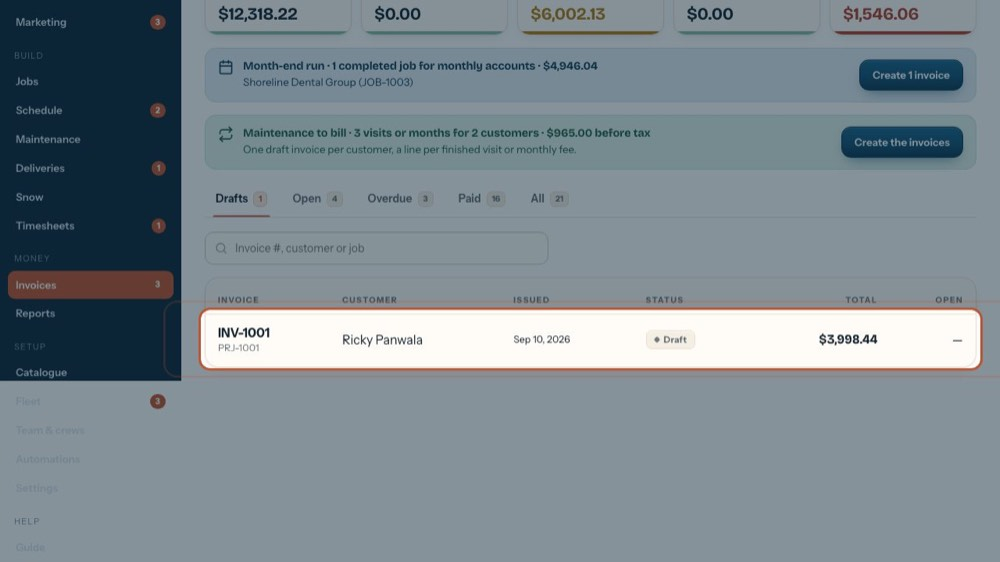
2Open a draft
Click the draft to open it.
-
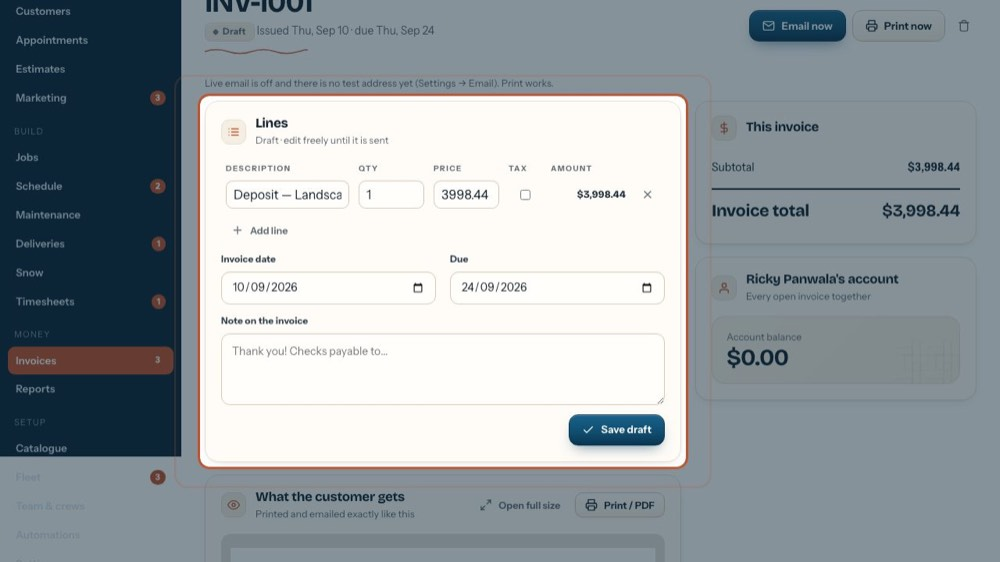
3Lines
A draft can be changed until it's sent. Each line: description, quantity, price, a Tax tick and the amount.
-
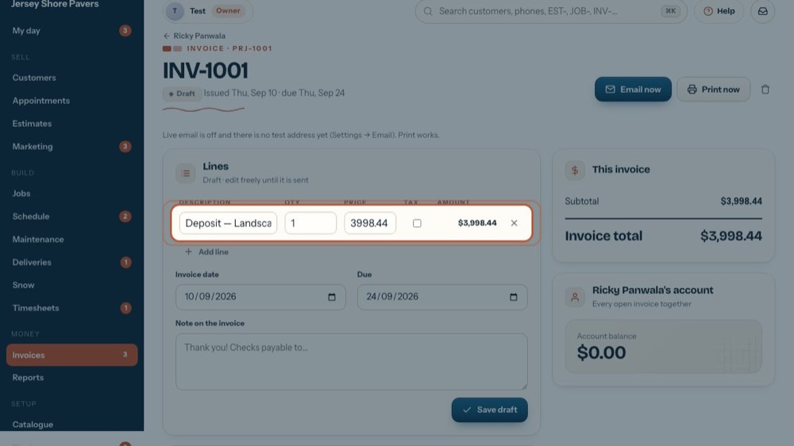
4Change a line
Type straight into the boxes; the amount updates as you type. Untick Tax for a tax-exempt line. The X at the end removes the line.
-
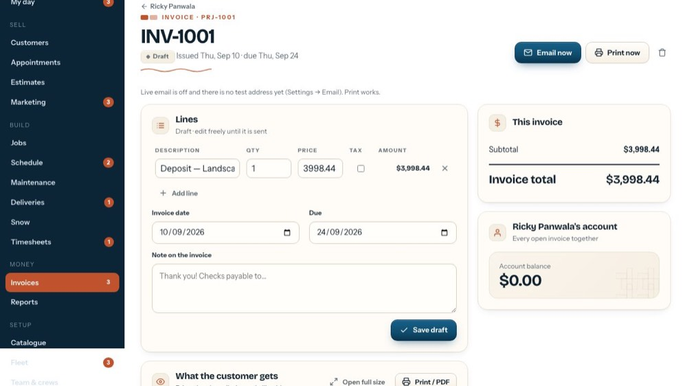
5Add line
Adds an empty line at the bottom.
-
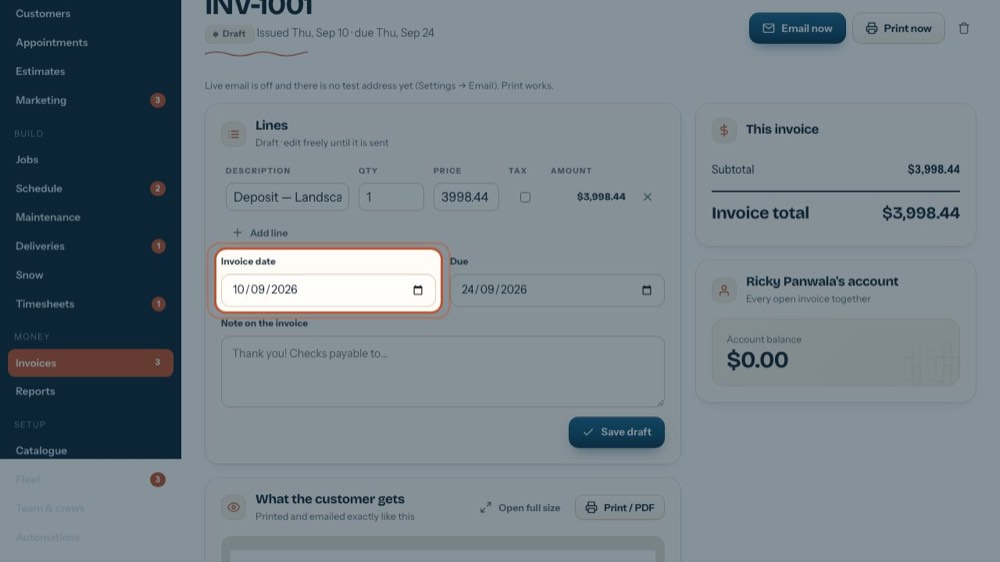
6Invoice date
The date printed on the invoice.
-
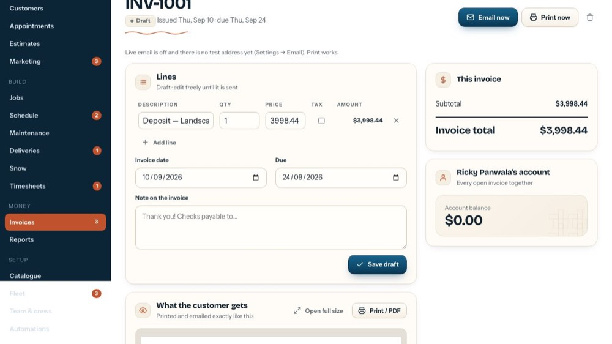
7Due
The same day as the invoice date reads 'due on receipt'. A later date prints as the due date and counts for overdue.
-
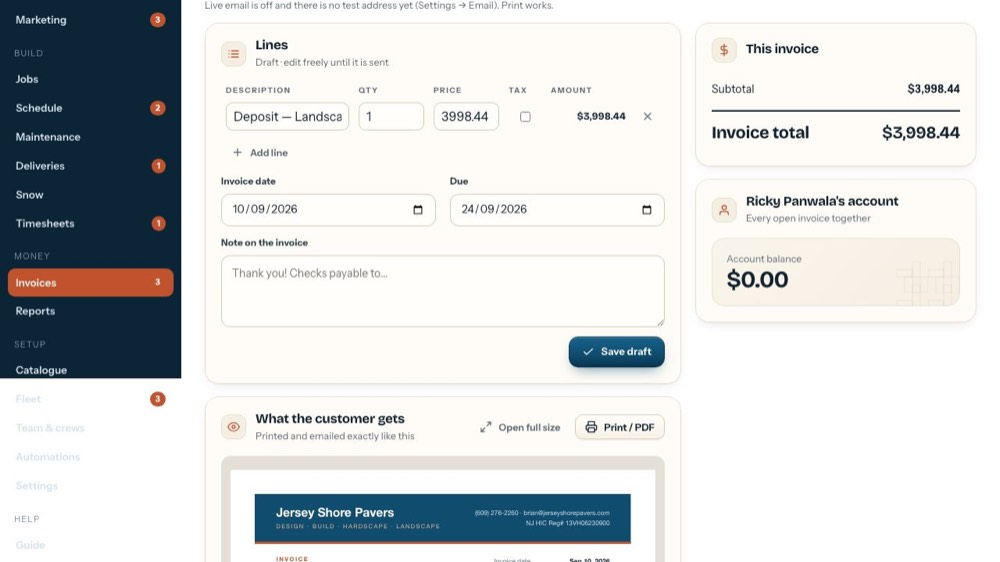
8Note on the invoice
Printed on the invoice: a thank-you, who to make checks payable to.
-
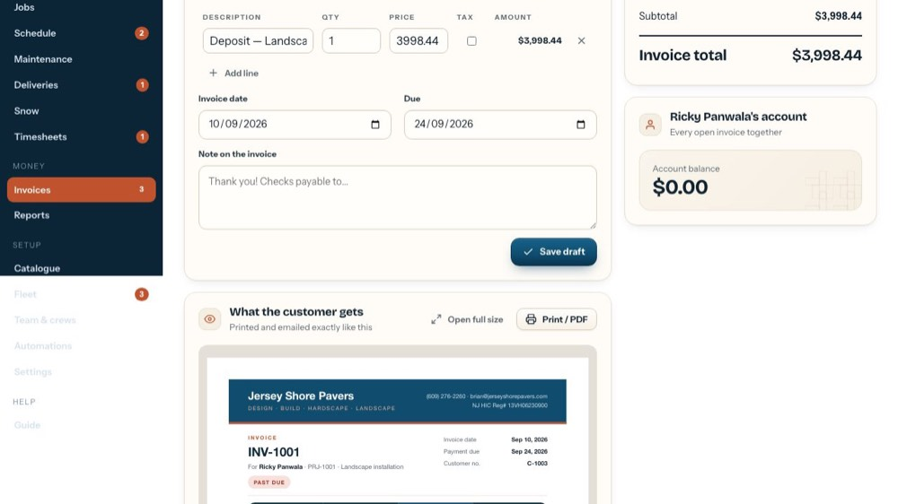
9Save draft
Saves your changes. Every line needs a description, and the due date can't be before the invoice date.
-
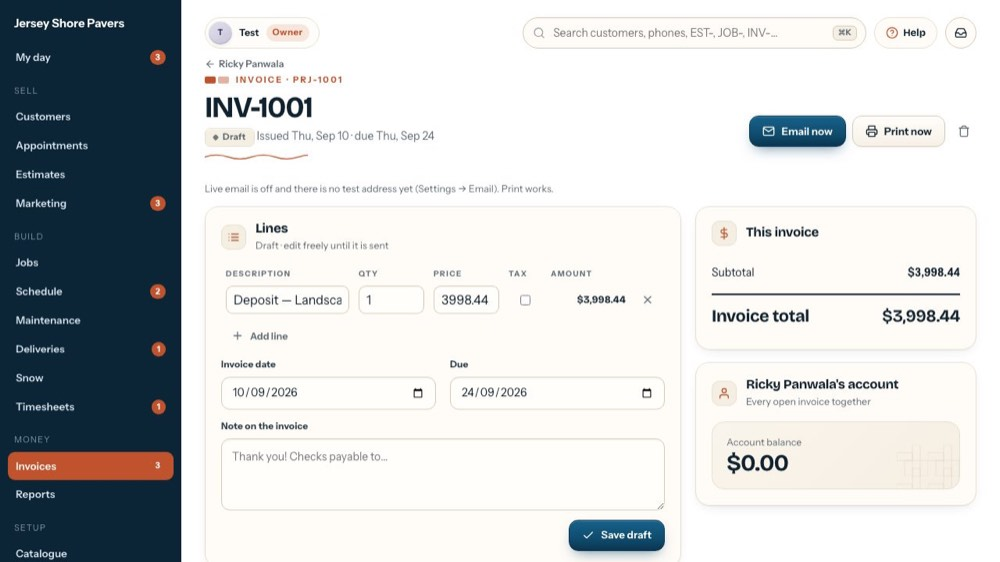
10Email now
Saves any changes, emails it to the customer and marks it sent. While live email is off it goes to the test address.
-
 11
11Print now
Saves, opens the print window and marks it sent (printed).
-
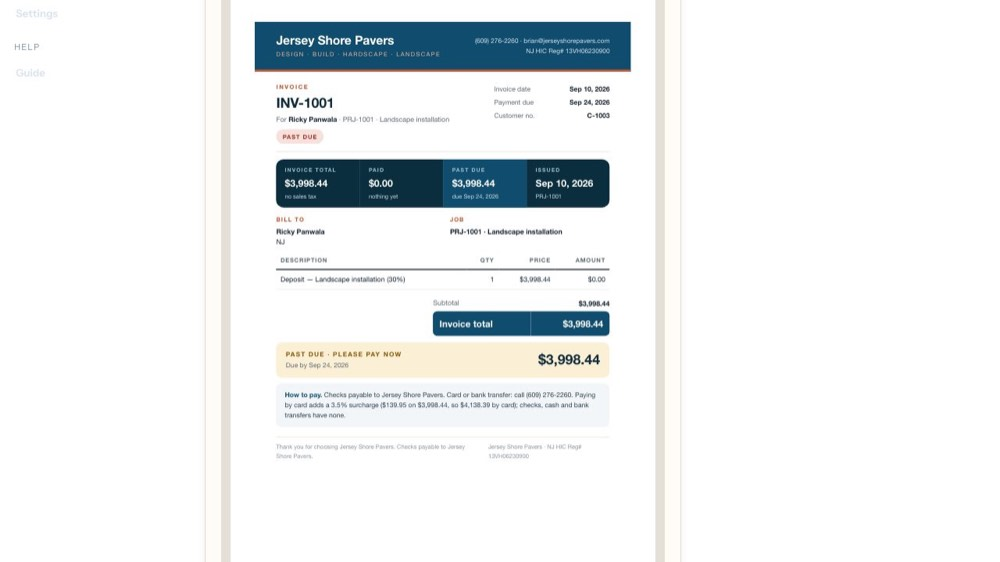
12Preview
The customer copy. After changing lines, save to refresh it.
-
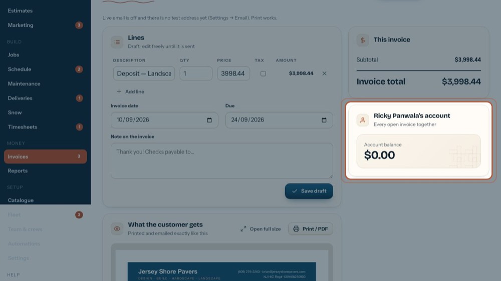
13The customer's account
Their whole balance across every open invoice, kept apart from this invoice. Click another invoice listed here to open it.
-
 14
14Void
Voids it, after asking. It stays on file as void, and a job milestone it billed can be invoiced again. Only before any payment is recorded.